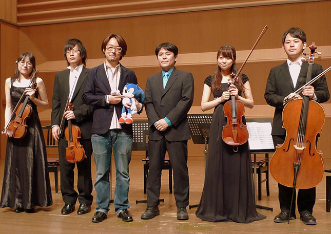

ソニック関連のイベント情報を紹介
2013.09.10
日本BGMフィルハーモニー管弦楽団が10月11日にかつしかシンフォニーヒルズ モーツァルトホールで実施するオーケストラ編成の初公演となるコンサートにて『ソニック ロストワールド』のメインテーマ「Wonder World」が演奏されることが決定いたしました。
『ソニック ロストワールド』の10月24日の発売に先駆けてオーケストラによる生演奏が楽しめる唯一の機会となります。
合わせて同曲の作曲者でもある『ソニック』シリーズの大谷サウンドディレクターがゲスト出演することが決定いたしました。
また『ソニック ワールドアドベンチャー』のテーマ曲「The World Adventure」も演奏いたします。
『ソニック』サウンドファン、『ソニック』ファンだけでなく、多くのゲームファンに楽しんでいただきたい機会となります。
日本BGMフィルハーモニー管弦楽団のオーケストラ初公演コンサートをぜひお楽しみください！
| 日程 | 2013年10月11日(金) |
|---|---|
| 会場 | かつしかシンフォニーヒルズ モーツァルトホール |
| 開場時間 | 18:00 |
| 開演時間 | 19:00※開演後でも曲間に入場いただけます。 |
| 座席 | 全席指定 |
| 内容 |
|
| 主催 | 一般社団法人 日本BGMフィルハーモニー管弦楽団 |
| その他 | チケット価格・購入方法、他演奏曲やゲストにつきましては下記日本BGMフィルハーモニー管弦楽団のホームページの情報をご覧ください。→コチラ |

※この写真は6/7に行われた日本BGMフィルハーモニー管弦楽団主催のアンサンブルコンサートの際にゲスト登壇した際に撮影されたものです。